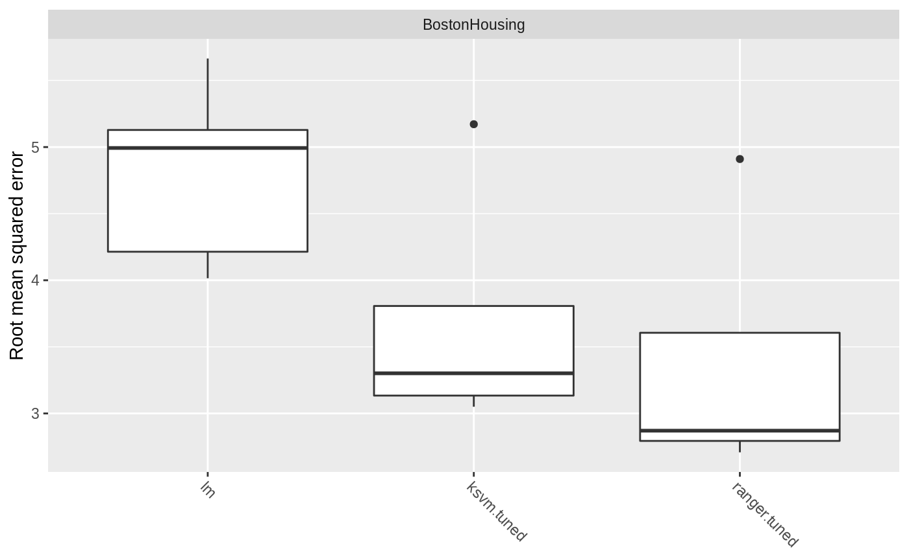

For the regression use case we use the well-known mlbench::BostonHousing() dataset. The road map is as follows:
First, let’s have a look at the data.
data(BostonHousing, package = "mlbench")
summary(BostonHousing)
## crim zn indus chas
## Min. : 0.00632 Min. : 0.00 Min. : 0.46 0:471
## 1st Qu.: 0.08204 1st Qu.: 0.00 1st Qu.: 5.19 1: 35
## Median : 0.25651 Median : 0.00 Median : 9.69
## Mean : 3.61352 Mean : 11.36 Mean :11.14
## 3rd Qu.: 3.67708 3rd Qu.: 12.50 3rd Qu.:18.10
## Max. :88.97620 Max. :100.00 Max. :27.74
## nox rm age dis
## Min. :0.3850 Min. :3.561 Min. : 2.90 Min. : 1.130
## 1st Qu.:0.4490 1st Qu.:5.886 1st Qu.: 45.02 1st Qu.: 2.100
## Median :0.5380 Median :6.208 Median : 77.50 Median : 3.207
## Mean :0.5547 Mean :6.285 Mean : 68.57 Mean : 3.795
## 3rd Qu.:0.6240 3rd Qu.:6.623 3rd Qu.: 94.08 3rd Qu.: 5.188
## Max. :0.8710 Max. :8.780 Max. :100.00 Max. :12.127
## rad tax ptratio b
## Min. : 1.000 Min. :187.0 Min. :12.60 Min. : 0.32
## 1st Qu.: 4.000 1st Qu.:279.0 1st Qu.:17.40 1st Qu.:375.38
## Median : 5.000 Median :330.0 Median :19.05 Median :391.44
## Mean : 9.549 Mean :408.2 Mean :18.46 Mean :356.67
## 3rd Qu.:24.000 3rd Qu.:666.0 3rd Qu.:20.20 3rd Qu.:396.23
## Max. :24.000 Max. :711.0 Max. :22.00 Max. :396.90
## lstat medv
## Min. : 1.73 Min. : 5.00
## 1st Qu.: 6.95 1st Qu.:17.02
## Median :11.36 Median :21.20
## Mean :12.65 Mean :22.53
## 3rd Qu.:16.95 3rd Qu.:25.00
## Max. :37.97 Max. :50.00This data set concerns housing in the suburban area of Boston. The target variable, chosen for the regression task, is medv - the median value of owner-occupied homes in $1000’s. Description of the others 13 attributes can be found at mlbench::BostonHousing()).
Now, let us continue with defining the regression task.
# Make a task
regr.task = makeRegrTask(data = BostonHousing, target = "medv")
regr.task
## Supervised task: BostonHousing
## Type: regr
## Target: medv
## Observations: 506
## Features:
## numerics factors ordered functionals
## 12 1 0 0
## Missings: FALSE
## Has weights: FALSE
## Has blocking: FALSE
## Has coordinates: FALSEIn order to get an overview of the features type, we can print out the regr.task. This shows that there are 12 numeric and one factor variables in the data set.
By calling listLearners("regr") we can see which learners are available for the regression task.
With so many learners it is difficult to choose which one would be optimal for this specific task. As such we will choose a sample of these learners and compare their results. This analysis uses the classical linear regression model (regr.lm), SVM (kernlab::ksvm()) with a radial basis kernel (regr.ksvm) and random forest from the ranger (ranger::ranger()) package (regr.ranger). In order to get a quick overview of all learner-specific tunable parameters you can call getLearnerParamSet() or its alias ParamHelpers::getParamSet(), which will list learner’s hyperparameters and their properties.
Before setting up a benchmark experiment we can specify which hyperparameters are going to be tuned. The mlr package provides powerful tuning algorithms, such as iterated F-racing (irace::irace()), CMA Evolution Strategy (cmaes::cma_es()), model-based / Bayesian optimization (mlrMBO::mbo()) and generalized simulated annealing (GenSA::GenSA()). See Tuning and Advanced Tuning for more details.
For each learner one hyperparameter will be tuned, i.e. kernel parameter sigma for SVM model and the number of trees (num.trees) in the random forest model. We start with specifying a search space for each of these parameters. With makeTuneControlCMAES() we set the tuning method to be CMA Evolution Strategy (cmaes::cma_es()). Afterwards we take 5-fold cross validation as our resampling strategy and root mean squared error (rmse) as optimization criterion. Finally, we make tuning wrapper for each learner.
set.seed(1234)
# Define a search space for each learner'S parameter
ps_ksvm = makeParamSet(
makeNumericParam("sigma", lower = -12, upper = 12, trafo = function(x) 2^x)
)
ps_rf = makeParamSet(
makeIntegerParam("num.trees", lower = 1L, upper = 200L)
)
# Choose a resampling strategy
rdesc = makeResampleDesc("CV", iters = 5L)
# Choose a performance measure
meas = rmse
# Choose a tuning method
ctrl = makeTuneControlCMAES(budget = 100L)
# Make tuning wrappers
tuned.ksvm = makeTuneWrapper(learner = "regr.ksvm", resampling = rdesc, measures = meas,
par.set = ps_ksvm, control = ctrl, show.info = FALSE)
tuned.rf = makeTuneWrapper(learner = "regr.ranger", resampling = rdesc, measures = meas,
par.set = ps_rf, control = ctrl, show.info = FALSE)In order to conduct a benchmark experiment, it is necessary to choose an evaluation method. We will use the resampling strategy and the performance measure from the previous section and then pass the tuning wrappers as arguments into the benchmark() function.
Now we want to evaluate the results.
getBMRAggrPerformances(bmr)
## $BostonHousing
## $BostonHousing$regr.lm
## rmse.test.rmse
## 4.841535
##
## $BostonHousing$regr.ksvm.tuned
## rmse.test.rmse
## 3.775318
##
## $BostonHousing$regr.ranger.tuned
## rmse.test.rmse
## 3.478283A closer look at the boxplot reveals that RF outperforms the other learners for this specific task. Despite the tuning procedure performed before, the benchmark experiment for linear and lasso regression yields similar but poor results.
